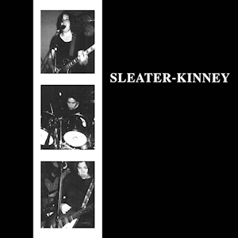

Sleater-Kinney - Worst to Best
posted 28/04/21
Time to do a worst to best for my favorite band, Sleater-Kinney! Sleater-Kinney were formed by Corin Tucker and Carrie Brownstein, who went through a couple of drummers before adding Janet Weiss, who brought her incredible drumming to the band throughout most of their career. Corin and Carrie started in the riot grrrl scene, and as a result Sleater-Kinney started with punk rock roots. But they have played with a variety of sounds throughout their career, never quite making the same album twice, and in my opinion, are among the best rock bands of all time. Without further ado, let’s get into the greatness that is the Sleater-Kinney discography.

9. Sleater-Kinney - 6/10
It’s no surprise this is lower on the list, though maybe most wouldn’t have it lowest given their recent output (we’ll get to that). This is a quick 22 minutes of unfiltered, raw punk rock Sleater-Kinney, and it’s generally pretty good. But like many punk rock records, this thing is pretty rough around the edges, and there are a couple of things that make this a 6 and not a 7.
The first is the album pacing, despite this being pretty short, it doesn’t quite fly by like you would expect it to. This feels like a collection of early S/K tracks that haven’t really formed into an album yet. This is especially apparent when comparing this to future albums; Sleater-Kinney have often nailed the flow of their albums, but seemingly not yet.
The second, and main reason, is some of Corin’s vocal performances. Now I generally love Corin’s vocals, and there are plenty of loud, screaming vocals off of later albums that I absolutely adore. But here, her yelpy vocals on a couple of tracks just don’t work for me. The main tracks that highlight this are: “Don’t Think You Wanna” and “The Last Song”; I just can’t get behind the performances here.
Overall, this is a decent release, but the band would take major strides in coming albums.
8. Call the Doctor - 7/10
I hate putting this at the #8 spot, because it is a clear notch above the self-titled debut, but I just don’t find it as compelling as the #7 album here (though I’m sure almost everyone disagrees, we’ll get to it soon enough)
Vocally, lyrically, and sonically, this is a cut above everything found on Sleater-Kinney’s debut, and there are more standout moments here (“Little Mouth” is incredible, one of their best 90s tracks). But this still doesn’t have the pacing and sonic cohesiveness I’m looking for, and still feels like a bunch of punk rock tracks, with little variation outside of the oddball “Hubcap”.
Also “I Wanna Be Your Joey Ramone” is overrated. Sorry.
7. The Center Won't Hold - 7/10
So I probably have to defend my high placement of this album, since for many, this is easily Sleater-Kinney’s worst effort. The Center Won’t Hold sees Sleater-Kinney abandoning everything they had perfected over their career and teaming with St. Vincent to make a strange art pop record. There are certainly a ton of risks here, and I think a handful of them pan out really well, and come together to make one of Sleater-Kinney’s more cohesive, conceptually focused efforts.
For all the talk of this album’s political overtness, it’s still very introspective and personal, much more than many give it credit for. The Center Won’t Hold sees Sleater-Kinney struggling to handle the world around them and falling to their worst habits of dependency and self-destruction. This is evident on plenty of the standout tracks here: “Hurry On Home”, “Can I Go On”, “Restless”, the divisive (but perfectly strange) “Bad Dance”, and “The Dog/The Body”. This album follows a clear story of sorts, as Sleater-Kinney dig the hole further and further and wallow in their worst habits, despite seemingly knowing what it takes to climb out of that hole (see “LOVE”).
Despite how much I admire the concept of this album, it’s only a 7/10 for a reason. Well, three reasons. I had said earlier that plenty of the risks taken here work out for Sleater-Kinney. Three of them don’t.
“RUINS” is an interesting idea, but drags on for much too long and is generally uninteresting and formulaic.
“The Future Is Here”. Not as bad as everyone wants to make it out to be, but still a weak track with a really weak chorus. I can appreciate the sentiment here, but the ideas needed to be explored more in depth to really paint the picture of how technology contributes to the feelings expressed throughout the album. I can see many writing this off as “smartphones bad, make me sad” unfortunately.
“Broken” is my least favorite track on here, I don’t think a S/K piano ballad is an inherently terrible idea, but it really depends on much, much stronger lyrics. The lyrics on this album are admittedly weak, this is far from their lyrical peak, but generally it works to produce simply understood, catchy art pop tunes that wear their emotions on their sleeves. But this song really doesn’t work, and it all comes down to the lyrics here. They just simply lack any nuance or cleverness that typically comes with a great Sleater-Kinney track, and just cry about how broken the band over a really bare piano instrumental, making for a really dull ending to an otherwise catchy, off the wall album. This could have been a really powerful moment for the album, but I just don’t feel it.

6. Dig Me Out - 8/10
This placement for Dig Me Out, and the 8/10 score will surely raise some eyebrows, so I should say that I do think this is their most overrated album (what an original opinion I’m sure). It’s great, fantastically paced, with a ton of iconic tracks and stellar moments, and I love this album for those reasons. But lyrically, Sleater-Kinney have only gotten better since this album, and much of what is here can be underwhelming on its own. That’s not to say anything here is bad, far from it. The first half of this album, especially the first 5 tracks, are some Sleater-Kinney’s most energetic and captivating work, and the youthful exuberance on display across this record is a great balance between their punk roots and what was to come for the band. But the second half of this album doesn’t quite match those peaks, and the pacing does die down a bit towards the end of the record, especially with “Buy Her Candy” and the underwhelming closer “Jenny”. Again, these tracks are all great, but Sleater-Kinney made clear improvements to diversify their sound and create even more emotionally compelling lyrics, and that’s clear on the next record.
5. The Hot Rock - 8/10
I may get some flak for this placement, and I could easily see this placed higher on others’ lists. This just doesn’t emphasize Sleater-Kinney’s strengths and makes for a relatively flat album when compared to albums ranked higher. Keep in mind the preceding statement is a nitpick, I say this relative to some of the albums I’ve placed higher on this list. This is still an 8, I think this album is fantastic, and very close to the two above it. But I had to pick an order, this is what I’d choose, for one main reason. I’ve spoken a lot so far about the flow of Sleater-Kinney albums, and it’s one of their strongest assets that they take advantage of more on other records. This doesn’t feel clunky by any means, but plenty of their releases higher on this list feel more sonically cohesive and better paced.
After the success of Dig Me Out, Sleater-Kinney took a seemingly more restrained at times, lyrically focused approach on their next album: The Hot Rock. Lyrically, this album really does shine, especially tracks like the title track, “The Hot Rock”, and “The Size of Our Love”. The lyrical prowess on display here is what places this above the previous set of albums, and is certainly one of Sleater-Kinney’s strengths that holds on their next few albums. The improvements to their lyrics and attempts to branch out sonically make a more compelling release than Dig Me Out, and clearly vaults it above their early work.
But, like I said earlier, this album doesn’t flow as well as their other releases. The restrained approach just doesn’t work for me, and it sounds like Sleater-Kinney are holding back on a few tracks here, as they lean further into the pop sounds explored on Dig Me Out. The guitar work here is still great throughout the album, but the vocals and drumming are not as consistent, at times lacking the ferocity and energy that is found throughout their other albums. Of course I’m nitpicking, and this could easily be placed higher, I just don’t enjoy the approach they take here. Future albums they would release all continue to build on the strides taken on this record, while achieving the fantastic pacing and energy that makes a great Sleater-Kinney record. All in all this is still a great album, but I see this as more of a stepping stone to their incredible 2000s releases, and not quite their best work.
4. No Cities To Love - 8/10
This is easily Sleater-Kinney’s most underrated release. It’s not quite as lyrically exquisite or emotionally powerful as an album like The Hot Rock, but it makes up for it with near-unmatched consistency, fantastic pacing, and some of the best instrumentation in the entire Sleater-Kinney discography. Every single track here, save for “Gimme Love” which is a bit underwhelming, is brimming with energy and features some of Corin’s, Carrie’s, and Janet’s best work on vocals, guitars, and drums.
I don’t have as much to say about this album thematically, it mainly focuses on Sleater-Kinney still finding themselves disillusioned with the world around them, 10 years later. This also sees S/K reflecting on the music industry and their place within it, a perspective that they’ve likely gained after the long hiatus and personal journeys each member has gone through. Almost every moment is a standout here, and there’s not much more to say, this album just rocks. Thank goodness Sleater-Kinney decided to reunite.
3. All Hands On The Bad One - 9/10
All Hands On The Bad One is another contender for most underrated Sleater-Kinney album; this sounds like a more mature band pulling elements from what made their previous two records great, and packaging them together in their most cohesive record yet. Like Dig Me Out, the pacing here is fantastic, and there are several standout moments here. Lyrically, this holds onto a lot of what made The Hot Rock great, but in a much more blunt and energetic package that allows Sleater-Kinney to embrace their energy and instrumental prowess that makes them so fantastic. Some of the best moments on this album include:
“Ironclad”. I love the energy that this track injects into the album quickly after the more restrained (but still great!) “The Ballad of a Ladyman”. It’s quickly apparent how fed up Sleater-Kinney are with the predominantly male institutions holding them back, a theme that’s carried throughout much of the album (and career). Great track
“All Hands On The Bad One”. Another classic title track from S/K, this slightly pulls back what “Ironclad” shot in your face and injects a much needed chill (relatively), catchy track to keep from overwhelming the listener. And it segues flawlessly into...
“Youth Decay”. This is my favorite on the album, it picks up where “Ironclad” left off and dials it up 10 notches. I love how unapologetically fierce this track is, especially vocally; it really works well alongside the vulnerable lyrics depicting their ongoing struggles with the boxes women have been placed into, and struggle to find powerful women challenging these norms (see the line “Daddy says you’ve got your mama’s mouth”, one of my favorites from Sleater-Kinney). This song perfectly captures everything great about this album: the energy of the instrumentation, the fantastic lyrics, and the open display of vulnerability.
“Was It A Lie?”. I couldn’t help but cry when first hearing this track. After the fun, quick “The Professional”, this somber moment just hit me like a truck; it’s incredibly powerful. The graphic depiction of this woman’s death, only for no one to care and for it to turn into a footnote in the endless, interconnected cycle of news and entertainment just got me. This is definitely one of Sleater-Kinney’s best tracks.
“The Swimmer” is definitely one of the best track here, and without a doubt one of the best Sleater-Kinney tracks ever. After the fast paced energetic album preceding it, this song beautifully winds down into a bittersweet, peaceful moment where they find themselves isolated in the water, completely unable to live on land without feeling constrained and torn apart. There’s a happiness here, Sleater-Kinney vocally depict a sense of inner peace and tranquility from floating alone in the water, with a vast, unblocked expanse to explore. But combined with the themes of the rest of the album, and the depressing lyrics detailing the desire to never return to land, it’s hard not to feel sad about the difficult reality women find themselves in.
Touching on all of the themes of the highlights here raises another selling point for this album, this was their most thematically focused album at the time, and the blunt lyrics here allow that to shine. Most of the tracks here are tightly focused on Sleater-Kinney’s position in the music industry and the world as women, one that they outright despise. The cohesion of this record, both sonically and thematically, and the emotional weight that arises from it, put this above all of their previous releases. This builds on everything S/K had done before, and luckily for us, they kept getting better.
2. One Beat - 9/10
Up until this album, all of Sleater-Kinney’s work had been mostly an assortment of tracks reflecting on their place in the world as women, analyzing their relationships with those important to them, and openly pushing back on the forces holding them down. There’s always been a clear identity to Sleater-Kinney, one that had become more focused on their previous release, but they kick that up a notch on this album with their most cohesive and politically charged effort (at the time). Unlike most of their work before this, there’s a clear message here that Sleater-Kinney wants to unapologetically shove in your face: marching to one beat. That’s the theme here, and it’s wonderfully executed. This is still an assortment of tracks, and not a carefully crafted concept album, but ties back to disillusionment with politics and forming a joint effort to tackle nationwide issues are more apparent than ever. The flow and variety on display here is also impeccable, this album really builds on all of the sounds Sleater-Kinney have previously explored, in their most consistent package (again, at the time).
I would now pick the standout moments here, but every song here is a standout moment. I don’t particularly love “Combat Rock”, it drags on for a bit long, but otherwise every song here is absolutely brilliant. I’ll instead attempt to summarize my favorites very briefly, before I get to Sleater-Kinney’s best non-Woods song.
“One Beat”: I will be blaring this song from my rooftop once we inevitably run out of oil (jk why even wait until then, I’ll start now). I never would have expected a Sleater-Kinney song about nuclear energy, but thank goodness it exists.
“Oh!”: “Get yourself into some self control, oh oh oh” is one of my favorite lines ever.
“Light Rail Coyote”: I love how this song pays homage to Sleater-Kinney’s roots, while still tying back to the themes discussed earlier. Painting the stark contrast between their quaint town where a coyote can just hop on the train with everyone, and our incredibly urbanized world filled with nothing but humans is incredibly effective, even if it’s not necessarily intended. This interpretation may be a stretch, but that doesn’t take away from the incredible guitar work on this track.
“O2”: This song so accurately paints our dependence on the institutions that control and facilitate everything we do. It doesn’t really matter whether this is intended economically, politically, or socially in regards to oppression of women, it’s incredible.
“Hollywood Ending”: The last two tracks see the themes of this album turned on their heads and point a mirror directly at Sleater-Kinney themselves. This song perfectly captures the results of lack of support and emotional guidance from society, and the inability for Sleater-Kinney to escape this vile self-destruction they find within themselves. This is touched upon further in “Sympathy”, but the frenetic pacing and screams of “Get out, get out, get out” perfectly capture their struggles here.
And now for my favorite, “Far Away”. Corin and Carrie come together perfectly on vocals here, I honestly can’t decide whose part to sing along to every time this song comes on. This song really ties together the themes of this album, asking us why we can’t just all get along and tackle the world’s problems together, in a lyrically compelling and vocally powerful package. Everything about this song is perfect, and if it wasn’t for The Woods, this would easily be Sleater-Kinney’s best song.
All in all, an absolutely fantastic (I need to buy a thesaurus) album. Most bands could only dream of having an album as consistent, exciting, and powerful as One Beat. But this is Sleater-Kinney, so without further ado...

1. The Woods - 10/10
So if you've seen the collage in the music section of the website, you expected this to be here. I don't just think this is the best Sleater-Kinney album, I think this is one of the best albums ever made. I can go on and on about this album, so I'll simply link you to the page where I do so, since I've rambled on here long enough. Click on the album to see my thoughts on it, and it will be apparent why I think it is the clear standout in what is already a stellar discography.